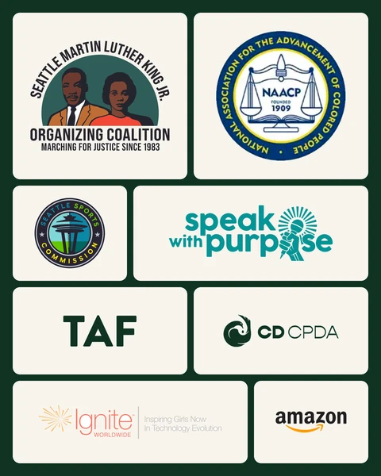
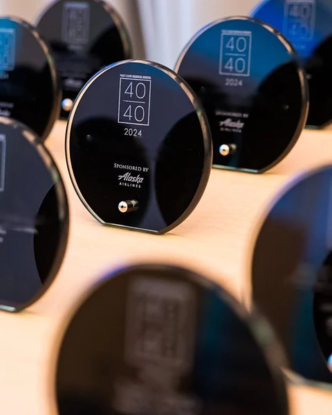

“Just a girl from East St. Louis, Illinois, who moved to Seattle at a young age, never imagining where life would take her.”
Shaudé L. Moore has led global teams, spoken on international stages, advocated for communities, and sat in rooms she never imagined she would be in. She spent 16 years at Amazon in global program management and data center security, and today she brings that executive discipline to community leadership across Seattle and King County.
Her path ran through some of the hardest seasons a young mother can face, including homelessness. Those seasons are part of her story, not the whole of it. What defines her is what came next: the degrees, the teams, the stages, and a lifelong commitment to the people coming up behind her.
Read her story

Mother. Corporate professional. Speaker. Advocate. Lifelong learner.
In this issue.
Six chapters of one journey, from where she started to where she is going next.
- 02My StoryEast St. Louis, the move to Seattle, motherhood, and the road from the hardest season to the world stage.
- 03Professional ExperienceSixteen years at Amazon, executive leadership, core strengths, education and credentials.
- 04Leadership & CommunityThe Seattle MLK Jr. Organizing Coalition, the NAACP, TAF, Speak With Purpose, the Seattle Sports Commission, Amazon’s employee networks and the McKinney Center.

- 05Awards & Recognition40 Under 40, the George Washington Trailblazer Award, and the MLK Jr. Community Organizing Award.

- 06Media & SpeakingKeynotes, panels and interviews, plus the topics she brings to stages around the world.
- 07Connect / Book MeInvite Shaudé to speak, consult, coach, join a panel or build a partnership.

Selected honors
- 2025George Washington Trailblazer AwardPresented by the MLK Jr. Celebration Committee (MLKCC) for exceptional organizational leadership in community development
- 202440 Under 40Puget Sound Business Journal
- 2019Community Organizing AwardMartin Luther King Jr. Commemoration
Bring Shaudé into the room.
Keynotes, panels, fireside chats, consulting, coaching and partnerships. Tell her what you have in mind and she will be in touch.
Book Shaudé